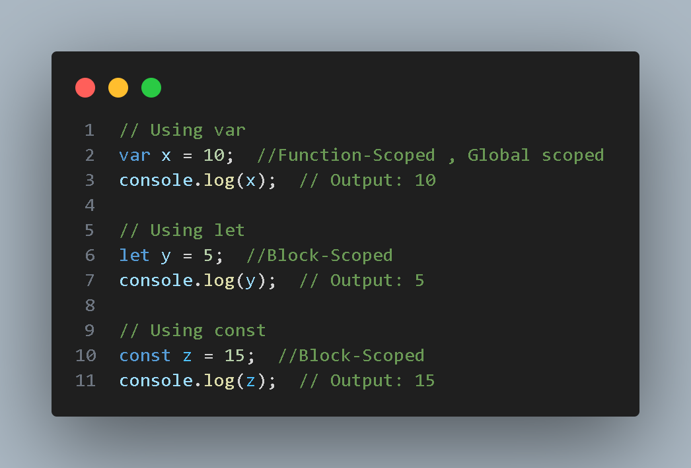

In JavaScript, variables are used to store and manage data in your programs. JavaScript has three keywords for declaring variables: `var`, `let`, and `const`. These keywords have different behavior and scoping rules.
'Var' ( Function-Scoped or Global-Scoped):
Variables declared with `var` are function-scoped, meaning they are accessible within the function in which they are declared.
Variables declared with `var` are also hoisted, which means they are moved to the top of their containing function or global scope during the compilation phase.
'var` variables can be re-declared within the same scope.
'Let' (Block-Scoped):
Variables declared with `let` are block-scoped, meaning they are accessible only within the block in which they are defined (block can be a function, loop, or any code enclosed in curly braces).
Variables declared with `let` are also hoisted, but they are not initialized until the point in the code where they are declared. This is known as the "temporal dead zone."
`let` variables cannot be re-declared within the same scope.
'Const' (Block-Scoped):
Variables declared with `const` are also block-scoped.
`const` variables must be initialized at the time of declaration and cannot be changed (reassigned) after initialization. However, the value of a `const` object or array can be mutated.

Data-Types
JavaScript has several data types that can be broadly categorized into two main categories: PRIMITIVE DATA TYPES AND REFERENCE DATA TYPES.
PRIMITIVE DATA TYPES:
1. Number: Represents numeric values, including integers and floating-point numbers. Examples: `10`, `3.14`.
2. String: Representing textual data in quotations is known as String. Examples: `"Hello, World!"`, `'JavaScript'`.
3. Boolean: Represents true or false values. Examples: `true`, `false`.
4. Undefined: Represents a variable that has been declared but has not been assigned a value.
5. Null: Represents an intentional absence of any object value or no value.
REFERENCE DATA TYPES:
1. Object: Represents complex data structures and is used for collections of data, functions, or methods. Objects are key-value pairs, where the keys are strings (or Symbols) and the values can be any data type.
2. Array: A special type of object used for storing an ordered list of values. Elements in an array can be of any data type.
3. Function: Functions are objects, and they can be assigned to variables, passed as arguments, and returned from other functions. Functions are used to perform specific tasks or calculations.
Operators
JavaScript includes a variety of operators that allow you to perform different operations on values. Here's an overview of some of the main types of operators in JavaScript: